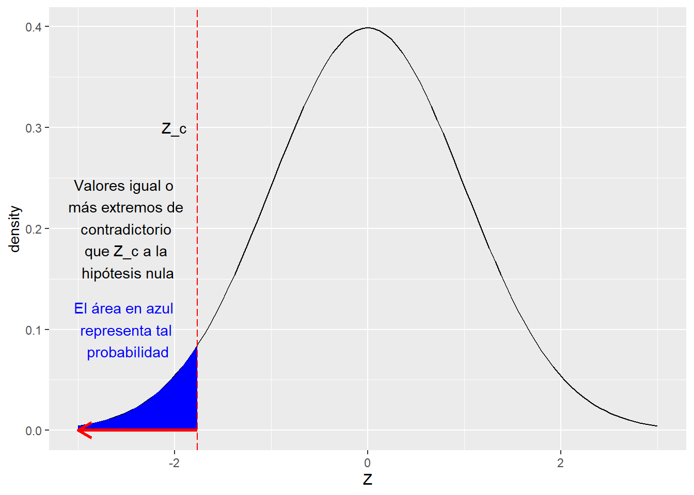

Show the code
library(ggplot2)library(ggplot2)Un fabricante de bombillas establece que la duración promedio de sus bombillas es de 10.000 horas. Un auditor externo propone que la duración promedio de las bombillas es en realidad menor de las 10.000 horas.
Se sabe que la duración promedio de una bombilla se distribuye normalmente con \(\sigma^2 = 1000\).
El auditor consiguió una muestra aleatoria de 28 bombillas y obtuvo una duración promedio de 9500 horas.
Realice una prueba de hipótesis de acuerdo a lo planteado por el auditor externo.
Sea:
\[ H_0: \mu = 10.000 \ \text{horas} \ \ \ \ \ H_A: \mu < 10.000 \ \text{horas}\]
Para este caso, se tiene que:
El estadístico de prueba es:
\[ Z_c = \dfrac{\overline{X}-\mu_0}{\dfrac{\sigma}{\sqrt{n}}}\]
Z_c <- (9500 - 10000) / (1500 / sqrt(28))\[ Z_c = \dfrac{9500-10000}{\dfrac{1500}{\sqrt{28}}} = -1.7638\]
Es la probabilidad de obtener un valor para el estadístico de prueba que sea igual o más extremo de contradictorio a \(H_0\) que el valor obtenido, suponiendo que \(H_0\) es verdadera.
\[ \text{valor p} = P(Z \leq Z_c) =P(Z < Z_c) \]
Para este caso:
p <- pnorm(Z_c)\[ \text{valor p} = P(Z < Z_c) = 0.0389\]
ggplot(data.frame(x = c(-3, 3)), aes(x)) +
stat_function(fun = dnorm,
geom = "line",
xlim = c(-3, 3)) +
stat_function(fun = dnorm,
geom = "area",
fill = "blue",
xlim = c(-3, Z_c)) +
geom_vline(xintercept = Z_c, colour="red", linetype = "longdash") +
annotate("text", label = "Z_c", x = -2, y = 0.3) +
annotate("text", label = "Valores igual o \n más extremos de \n contradictorio \n que Z_c a la \n hipótesis nula", x = -2.5, y = 0.2) +
annotate("text", label = "El área en azul \n representa tal \n probabilidad", x = -2.5, y = 0.1, color = "blue") +
geom_segment(
aes(x = Z_c, y = 0, xend = -3, yend = 0),
color = "red",
size = 1.2,
arrow = arrow(length = unit(4, "mm"))
) +
xlim(-3, 3) +
labs(x = "Z", y = "density")
¿Por qué se rechaza la hipótesis nula para valores bajos de \(H_0\)?
El valor se calcula suponiendo que la hipótesis nula es verdadera.
Por ejemplo, para este caso, suponiendo que \(\mu = 10000 \ \text{horas}\), la probabilidad de que \(Z_c < -1.7638\) es de \(0.0389\) (valor p).
Entre más pequeño es valor p, más contradictorios son los datos a \(H_0\).
En este caso, con cualquier nivel de significancia (\(\alpha\)) mayor a \(0.0389\), se rechaza la hipótesis nula.
De aquí se deriva una definición alternativa para el valor p (o nivel de significación observado): “es el nivel de significancia más pequeño al cual \(H_0\) sería rechazada”.